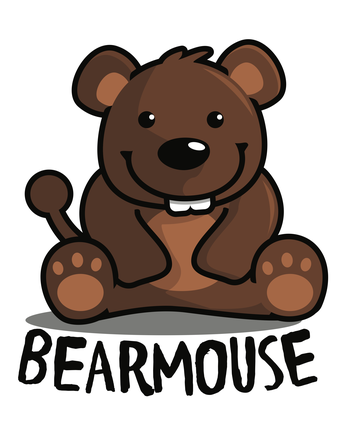
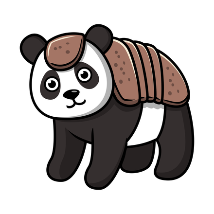
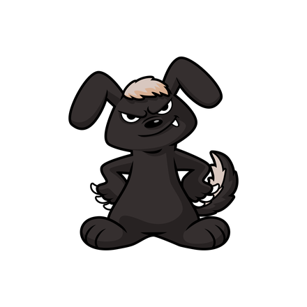

a shopfront on the street · a camera obscura · mind your eyes on the way in
A camera obscura on the street
Chimera Obscura
Two animals, one creature, thrown onto a white table by a lens in the roof.
It is dark in here on purpose. A camera obscura is a room painted black inside, so that the only light in it is what comes through one opening and makes a picture on a surface; in this one the opening is a lens in the roof, and the surface is a round white table. A chimera is one creature made out of more than one animal, and whatever you make here appears on that table in full colour. The room began with Norah asking for an otteraccoon, an otter and a raccoon at once, so that is what is on the table when you walk in.
On the table
Otteraccoon
The body, head, mouth, arms, feet and colours of an otter; the ears, tail and markings of a raccoon.
The bench
Pick two animals, then choose which one each part comes from, or let any part come from any animal on the shelf. Toss picks for you.
Start from one of these
The name it suggests is the body’s animal and then the animal that gave the most other parts. Change it to anything you like.
Take it with you and it follows you from room to room as your familiar, sitting wherever there are no words. It stays where you put it unless the dial is at MAX GLITTER or you let it move. Press it to move it or send it home. Your browser keeps it, and nothing is sent anywhere.
Signed on to the CB as . Keep this chimera in your Profile, with its name, and you can send it as a sticker from the radio and show it in your profile.
Sign on to the CB, at the Community Center, to keep a chimera in your Profile and send it as a sticker.
The bench needs scripts switched on, and everything else in this room works without them: the table shows the otteraccoon, and the wall, the shelf and the rules are all here.
On the wall
Stimpunks has had chimeras for years. Ryan, Chelsea and Inna each chose one, and Becky Hicks drew them for our About page. They hang here by the door, and the bench can make all three.
Many years ago, a friend dubbed Ryan “Bearmouse”, intuiting a part of his neurodivergent spiky profile.
— Stimpunks, About, read on our About page

Bearmouse
Ryan's, drawn by Becky Hicks

Pandillo
Chelsea's, drawn by Becky Hicks

Bunnybadger
Inna's, drawn by Becky Hicks
Our friends at Randimals make combined animals you can hold, as plush toys, and the About page has pointed at them for years. The Porkypine is a name Randimals and Stimpunks made together, and both use it.
Can’t find it?
On the shelf now, with every part each one has:
- a bear
- a mouse
- a panda
- an armadillo
- a rabbit
- a badger
- an otter
- a raccoon
- a pig
- a porcupine
- a fox
- a cat
- a dog
- an elephant
- a penguin
- an owl
- a turtle
- a zebra
- a possum
- an opossum
If the animal you want is not on the shelf, or the part you want is not on any animal that is, ask for it in the suggestion box in The Sandbox, signed on to the CB. It gets drawn the way every part here was, as code, and put on the shelf for everybody, so every chimera can have it. That takes days, not seconds. A moderator answers every request, done or not doing, with a reply.
Ask for an animal in the suggestion box →
Only real animals go on the shelf, under the names people call them: no people or parts of people, and no character somebody owns.
House rules
- Every chimera here is whole. This room never calls one anything less, and nothing about how it was put together is a problem to be solved.
- No quiz. A chimera can be a picture of yourself, the way Ryan’s Bearmouse is, but nothing here tells you which animal you are or what an animal says about anybody.
- Nothing is counted: not the chimeras you make, not anybody else’s, and not how many the shelf could make.
- Nothing makes a sound, and nothing moves until you press something. At MAX GLITTER a new chimera comes into focus on the table, the way a picture does when the lens is turned.
- The bench sends nothing unless you press Keep it in my Profile, signed on to the CB, and then it sends which animal gave each part and the name, and nothing else. A link to your chimera carries it after the # in the address, which never reaches a server. What is kept, and how to delete it.
- The names it suggests are its own, and never one of Randimals’ characters.
Whose this is
- The three chimeras on the wall are Becky Hicks’s, drawn for stimpunks.org’s About page: Ryan’s Bearmouse, Chelsea’s Pandillo and Inna’s Bunnybadger. Becky is on the Stimpunks board, and they hang here under this site’s licence, CC BY-SA 4.0, with her yes.
- The room began with Norah, asking for an otteraccoon.
- Every part on the shelf is drawn as code by Claude, an AI model made by Anthropic, to Ryan’s brief, after Becky’s three. Nothing on this page calls an AI while you use it.
- Our friends at Randimals make combined animals as plush toys. The Porkypine is a name Randimals and Stimpunks made together, and no name this room suggests is one of their characters’.
- The line about Ryan’s Bearmouse is from our About page and was checked there word for word.
- Gilda Display is Eduardo Tunni’s and Gantari is Lafontype’s, both under the SIL Open Font License 1.1 and read off their own records.
Job marker — a brass lens cap, dropped on the black floor
You have found a job marker. The Adventurer’s Guild is a shopfront on the street, and it posts jobs that send you round these rooms. Take the code below to its board and that job is done. Nothing here is scored, nothing expires, and one is a perfectly good number of jobs to do.
The job: Three on the wall
Before the code: Three chimeras hang on the wall in Chimera Obscura. Whose is the Pandillo?
Hint 1
It is a panda with an armadillo's plates.
Hint 2
Its name is under it on the wall, with whose it is.
Last hint
Chelsea's.
Give me the answer
The answer is Chelsea's. The Pandillo is Chelsea's: a panda with an armadillo's plates on its back and head, drawn by Becky Hicks. Ryan's is the Bearmouse and Inna's the Bunnybadger.
Taking the answer is a real way through this, not a lesser one. Nothing is watching and nothing is written down.
Quest code: LENS
That is the one.
The Pandillo is Chelsea's: a panda with an armadillo's plates on its back and head, drawn by Becky Hicks. Ryan's is the Bearmouse and Inna's the Bunnybadger.
Quest code: LENS
HOW LOUD DO YOU WANT IT?
Starts wherever your device says. Nothing moves, flashes, or plays until you say so — and in here nothing makes a sound at all.